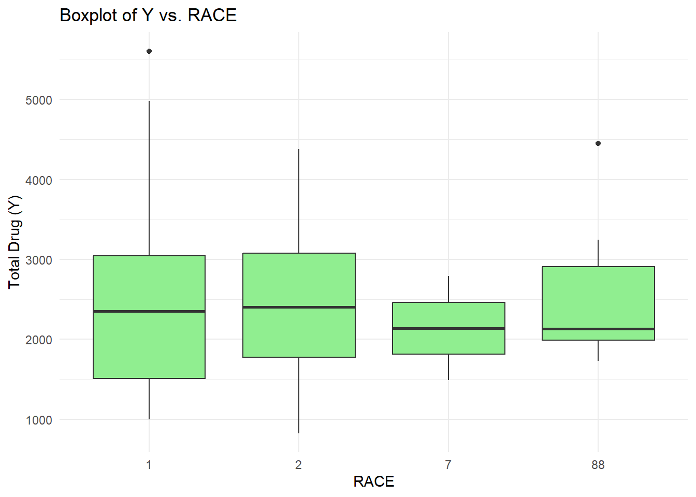
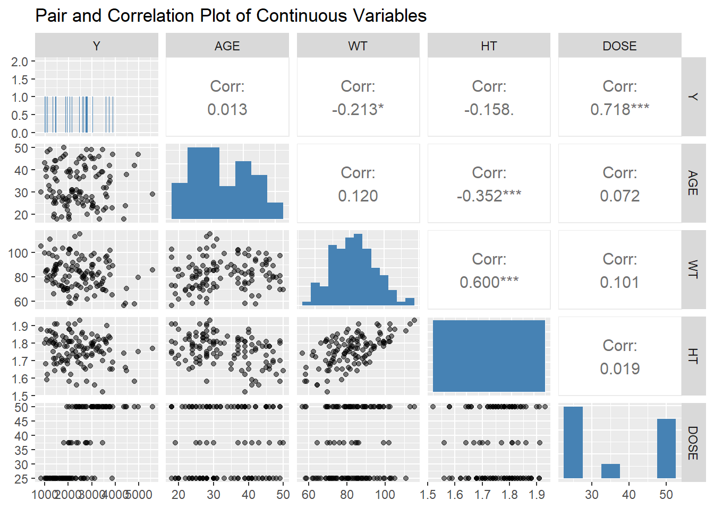
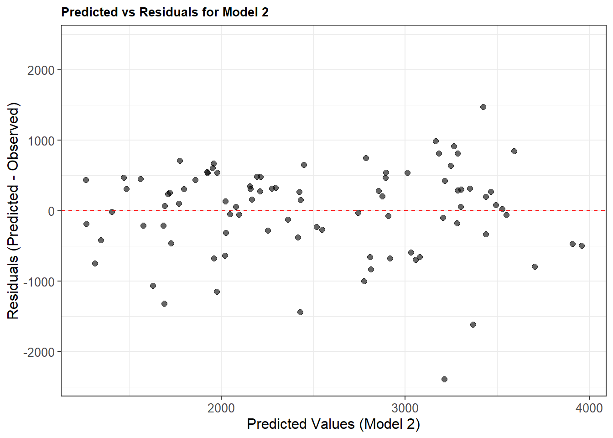
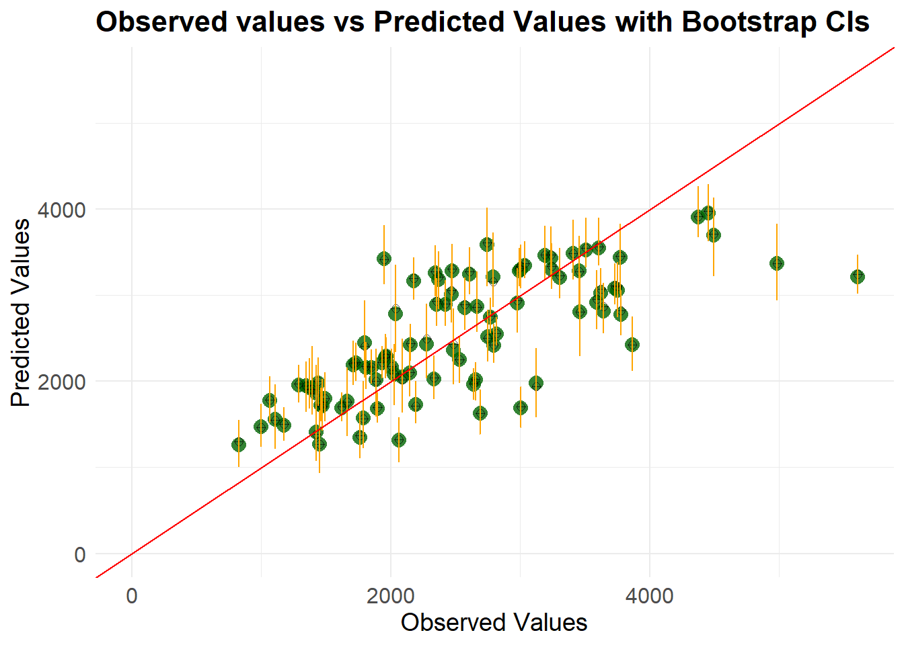
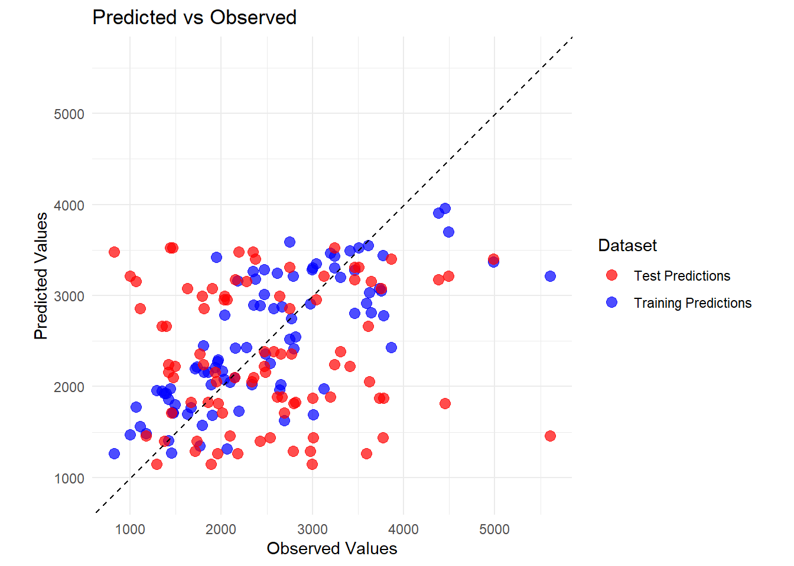

We see that the mean age is 33.26. The mean height and weight are 83.60 and 1.76 - thus the mean BMI is 26.98 (overweight).
Scatterplots:
library(ggplot2)# Scatterplot of Y vs. AGEggplot(drug_mag_final, aes(x = AGE, y = Y)) +geom_point(color ='blue') +labs(title ="Scatterplot of Y vs. AGE", x ="AGE", y ="Total Drug (Y)") +theme_minimal()
# Scatterplot of Y vs. WT (weight)ggplot(drug_mag_final, aes(x = WT, y = Y)) +geom_point(color ='red') +labs(title ="Scatterplot of Y vs. WT", x ="Weight (WT)", y ="Total Drug (Y)") +theme_minimal()
# Scatterplot of Y vs. HT (height)ggplot(drug_mag_final, aes(x = HT, y = Y)) +geom_point(color ='green') +labs(title ="Scatterplot of Y vs. HT", x ="Height (HT)", y ="Total Drug (Y)") +theme_minimal()
Age and total drug do not seem to have any linear relationship. Similarly, no clear relationship is seem between total drug and weight or height.
Boxplots:
# Boxplot of Y vs. SEXggplot(drug_mag_final, aes(x =factor(SEX), y = Y)) +geom_boxplot(fill ='lightblue') +labs(title ="Boxplot of Y vs. SEX", x ="SEX", y ="Total Drug (Y)") +theme_minimal()
# Boxplot of Y vs. RACEggplot(drug_mag_final, aes(x =factor(RACE), y = Y)) +geom_boxplot(fill ='lightgreen') +labs(title ="Boxplot of Y vs. RACE", x ="RACE", y ="Total Drug (Y)") +theme_minimal()

Sex = 2 has a slightly lower mean total drug administered. The mean total drug by race seems to be the same.
Distributions:
library(ggplot2)library(patchwork) # To combine plots# Histogram for continuous variablesp1 <-ggplot(drug_mag_final, aes(x = Y)) +geom_histogram(fill ='steelblue', color ='black', bins =30) +labs(title ="Distribution of Total Drug (Y)", x ="Total Drug (Y)", y ="Count") +theme_minimal()p2 <-ggplot(drug_mag_final, aes(x = AGE)) +geom_histogram(fill ='darkorange', color ='black', bins =30) +labs(title ="Distribution of Age", x ="Age", y ="Count") +theme_minimal()p3 <-ggplot(drug_mag_final, aes(x = WT)) +geom_histogram(fill ='forestgreen', color ='black', bins =30) +labs(title ="Distribution of Weight (WT)", x ="Weight", y ="Count") +theme_minimal()p4 <-ggplot(drug_mag_final, aes(x = HT)) +geom_histogram(fill ='purple', color ='black', bins =30) +labs(title ="Distribution of Height (HT)", x ="Height", y ="Count") +theme_minimal()p5 <-ggplot(drug_mag_final, aes(x = DOSE)) +geom_histogram(fill ='darkred', color ='black', bins =30) +labs(title ="Distribution of Dose", x ="Dose", y ="Count") +theme_minimal()# Bar plots for categorical variablesp6 <-ggplot(drug_mag_final, aes(x =factor(SEX))) +geom_bar(fill ='skyblue', color ='black') +labs(title ="Distribution of Sex", x ="Sex", y ="Count") +theme_minimal()p7 <-ggplot(drug_mag_final, aes(x =factor(RACE))) +geom_bar(fill ='pink', color ='black') +labs(title ="Distribution of Race", x ="Race", y ="Count") +theme_minimal()# Combine the plots(p1 + p2) / (p3 + p4) / (p5 + p6) / p7
The distributions are as expected. Weight is normally distributed. Height is slightly skewed. Age seems to have a bimodal distribution.
Correlation plots:
library(GGally)
Registered S3 method overwritten by 'GGally':
method from
+.gg ggplot2
library(ggplot2)# Select only continuous variables for pair plotscontinuous_vars <- drug_mag_final %>%select(Y, AGE, WT, HT, DOSE)# Pair plot with customized bin widthggpairs(continuous_vars, lower =list(continuous =wrap("points", alpha =0.5)),upper =list(continuous =wrap("cor", size =4)),diag =list(continuous =wrap("barDiag", fill ="steelblue", binwidth =5)),title ="Pair and Correlation Plot of Continuous Variables")

The correlation between total drug and weight is significant (-0.210). The drug may have been dosed based on body weight. Other correlations are not relevant to the drug.
Call:
lm(formula = Y ~ DOSE + HT + WT + AGE + as.factor(SEX) + as.factor(RACE),
data = drug_mag_final)
Residuals:
Min 1Q Median 3Q Max
-1480.86 -367.81 -79.95 266.15 2431.52
Coefficients:
Estimate Std. Error t value Pr(>|t|)
(Intercept) 3386.863 1835.153 1.846 0.067623 .
DOSE 59.935 4.880 12.281 < 2e-16 ***
HT -748.487 1103.979 -0.678 0.499188
WT -23.047 6.395 -3.604 0.000471 ***
AGE 3.155 7.825 0.403 0.687530
as.factor(SEX)2 -357.734 216.928 -1.649 0.101957
as.factor(RACE)2 155.034 128.627 1.205 0.230650
as.factor(RACE)7 -405.320 448.189 -0.904 0.367768
as.factor(RACE)88 -53.505 244.668 -0.219 0.827296
---
Signif. codes: 0 '***' 0.001 '**' 0.01 '*' 0.05 '.' 0.1 ' ' 1
Residual standard error: 614.3 on 111 degrees of freedom
Multiple R-squared: 0.6193, Adjusted R-squared: 0.5919
F-statistic: 22.57 on 8 and 111 DF, p-value: < 2.2e-16
We can see that dose and weight are significant predictors of Y. The R-squared has increased to 0.6193, F-statistic = 22.57 and p-value < 0.05, thus this model is a better fit than the previous model.
Compare the root mean square error and R-squared:
#Model 1# Get predictions for model 1predictions <-predict(dose_model)# Calculate RMSEactuals <- drug_mag_final$Yrmse <-sqrt(mean((predictions - actuals)^2))# Calculate R-squaredr_squared <-summary(dose_model)$r.squared# Print resultscat("RMSE:", round(rmse, 2), "\n")
RMSE: 666.46
cat("R-squared:", round(r_squared, 2), "\n")
R-squared: 0.52
#Model 2# Get predictions for model 2predictions <-predict(full_model)# Calculate RMSEactuals <- drug_mag_final$Yrmse <-sqrt(mean((predictions - actuals)^2))# Calculate R-squaredr_squared <-summary(full_model)$r.squared# Print resultscat("RMSE:", round(rmse, 2), "\n")
RMSE: 590.85
cat("R-squared:", round(r_squared, 2), "\n")
R-squared: 0.62
The RMSE for model 1 is greater than model 2, which means model 2 is a better fit. Similarly, R-squared increased, thus model 2 explains 62% of the variation in Y.
Logistic regression: Fitting a model to predict SEX using DOSE
Call:
glm(formula = SEX ~ DOSE, family = binomial, data = drug_mag_final)
Coefficients:
Estimate Std. Error z value Pr(>|z|)
(Intercept) -0.76482 0.85395 -0.896 0.370
DOSE -0.03175 0.02432 -1.306 0.192
(Dispersion parameter for binomial family taken to be 1)
Null deviance: 94.242 on 119 degrees of freedom
Residual deviance: 92.431 on 118 degrees of freedom
AIC: 96.431
Number of Fisher Scoring iterations: 5
We see that obviously, dose is not a significant predictor of sex.
Model with all predictors
full_sex_model =glm(SEX~DOSE + Y + HT + WT + AGE +as.factor(RACE), data=drug_mag_final, family=binomial)summary(full_sex_model)
Call:
glm(formula = SEX ~ DOSE + Y + HT + WT + AGE + as.factor(RACE),
family = binomial, data = drug_mag_final)
Coefficients:
Estimate Std. Error z value Pr(>|z|)
(Intercept) 6.033e+01 1.804e+01 3.345 0.000824 ***
DOSE -3.076e-02 7.761e-02 -0.396 0.691893
Y -1.040e-03 9.628e-04 -1.081 0.279840
HT -3.320e+01 1.108e+01 -2.995 0.002744 **
WT -6.283e-02 7.942e-02 -0.791 0.428908
AGE 8.340e-02 6.074e-02 1.373 0.169724
as.factor(RACE)2 -1.927e+00 1.375e+00 -1.402 0.160967
as.factor(RACE)7 1.176e-01 3.846e+00 0.031 0.975604
as.factor(RACE)88 -1.500e+00 2.195e+00 -0.683 0.494317
---
Signif. codes: 0 '***' 0.001 '**' 0.01 '*' 0.05 '.' 0.1 ' ' 1
(Dispersion parameter for binomial family taken to be 1)
Null deviance: 94.242 on 119 degrees of freedom
Residual deviance: 32.077 on 111 degrees of freedom
AIC: 50.077
Number of Fisher Scoring iterations: 8
Here, height is a significant predictor of sex. This makes sense since women are on average shorter than men.
Accuracy and ROC-AUC:
library(pROC)
Type 'citation("pROC")' for a citation.
Attaching package: 'pROC'
The following objects are masked from 'package:stats':
cov, smooth, var
We see that accuracy for Model 2 is greater than Model 1, thus model 2 is able to predict sex with greater accuracy (94.17% of the time).
Receiver operating characteristic - area under the curve (ROC-AUC) tells us how well the model is able to distinguish between SEX = 1 and SEX = 2. For model 1, ROC-AUC = 0.592, so it is only slightly better at distinguishing compared to a random model. For model 2, ROC-AUC = 0.98, thus it is excellent at distinguishing between the sexes.
Exercise 10: Model Improvement
Remove the variable race:
drug_mag_final$RACE <-NULL
We now have a dataset with 120 observations and 6 variables.
Now, we set a random seed for reproducibility
rngseed =1234
Now, we split the data - 75% train and 25% test set:
# Load the rsample package (part of tidymodels)library(rsample)# Set the seed for reproducibilityset.seed(rngseed)# Split the data into 75% train and 25% testdata_split <-initial_split(drug_mag_final, prop =3/4)# Create data frames for the two setstrain_data <-training(data_split) # 75% training settest_data <-testing(data_split) # 25% test set
# Model 1: Only DOSEdose_only_model <-linear_reg() %>%set_engine("lm") %>%set_mode("regression") %>%fit(Y ~ DOSE, data = train_data)dose_only_predictions <-predict(dose_only_model, new_data = train_data) %>%bind_cols(train_data)dose_only_rmse <- dose_only_predictions %>%rmse(truth = Y, estimate = .pred)# Model 2: All predictorsfull_predictors_model <-linear_reg() %>%set_engine("lm") %>%set_mode("regression") %>%fit(Y ~ DOSE + HT + WT + AGE +as.factor(SEX), data = train_data)full_predictors_predictions <-predict(full_predictors_model, new_data = train_data) %>%bind_cols(train_data)full_predictors_rmse <- full_predictors_predictions %>%rmse(truth = Y, estimate = .pred)# Null Modelnull_model <-null_model() %>%set_engine("parsnip") %>%set_mode("regression") %>%fit(Y ~1, data = train_data)null_predictions <-predict(null_model, new_data = train_data) %>%bind_cols(train_data)null_rmse <- null_predictions %>%rmse(truth = Y, estimate = .pred)# Print all RMSE results in the desired ordercat("DOSE-only Model RMSE:", dose_only_rmse$.estimate, "\n")
DOSE-only Model RMSE: 702.8078
cat("Full Predictors Model RMSE:", full_predictors_rmse$.estimate, "\n")
Full Predictors Model RMSE: 627.4408
cat("Null Model RMSE:", null_rmse$.estimate, "\n")
Null Model RMSE: 948.3526
We see that the highest RMSE value is observed with the null model, followed by the dose-only model, followed by the model using all the predictors. Since the model with all the predictors has the lowest RMSE, this model provides the best overall fit.
Now, we move on to the cross-validation part:
# Set the random seedset.seed(rngseed)# Splitting the data into training and test setsdata_split <-initial_split(drug_mag_final, prop =0.75)train_data <-training(data_split)test_data <-testing(data_split)
Now, we perform the 10-fold cross-validation
library(tidymodels)# Set the random seed for reproducibilityset.seed(rngseed)# Create a 10-fold cross-validation objectcv_folds <-vfold_cv(train_data, v =10)# Model 1: Dose as predictordose_only_cv_model <-linear_reg() %>%set_engine("lm") %>%set_mode("regression")# Fit and evaluate Model 1 using 10-fold CVdose_only_cv_results <-fit_resamples( dose_only_cv_model, Y ~ DOSE,resamples = cv_folds,metrics =metric_set(yardstick::rmse) # Pass the metric function, not a string)# Extract the average RMSE across all foldsdose_only_cv_rmse <- dose_only_cv_results %>%collect_metrics() %>%filter(.metric =="rmse") %>%pull(mean)cat("DOSE-only Model Average RMSE (10-fold CV):", dose_only_cv_rmse, "\n")
DOSE-only Model Average RMSE (10-fold CV): 690.5398
# Model 2: All predictors# Specify the linear modelfull_predictors_cv_model <-linear_reg() %>%set_engine("lm") %>%set_mode("regression")# Fit and evaluate Model 2 using 10-fold CVfull_predictors_cv_results <-fit_resamples( full_predictors_cv_model, Y ~ DOSE + HT + WT + AGE +as.factor(SEX),resamples = cv_folds,metrics =metric_set(yardstick::rmse) # Wrap rmse in metric_set())# Extract the average RMSE across all foldsfull_predictors_cv_rmse <- full_predictors_cv_results %>%collect_metrics() %>%filter(.metric =="rmse") %>%pull(mean)cat("Full Predictors Model Average RMSE (10-fold CV):", full_predictors_cv_rmse, "\n")
Full Predictors Model Average RMSE (10-fold CV): 645.6909
The RMSE for the dose-only model decreased from 702 to 690, while that for the model with all the predictors increased from 627 to 645. Thus, using cross-validation improved the fit of one model.
Now, we compute standard error of the RMSE:
# Extract RMSE for each fold for Model 1dose_only_cv_rmse_folds <- dose_only_cv_results %>%collect_metrics(summarize =FALSE) %>%filter(.metric =="rmse")# Compute average RMSE and standard error for Model 1dose_only_cv_rmse <-mean(dose_only_cv_rmse_folds$.estimate)dose_only_cv_rmse_se <-sd(dose_only_cv_rmse_folds$.estimate) /sqrt(nrow(dose_only_cv_rmse_folds))# Extract RMSE for each fold for Model 2full_predictors_cv_rmse_folds <- full_predictors_cv_results %>%collect_metrics(summarize =FALSE) %>%filter(.metric =="rmse")# Compute average RMSE and standard error for Model 2full_predictors_cv_rmse <-mean(full_predictors_cv_rmse_folds$.estimate)full_predictors_cv_rmse_se <-sd(full_predictors_cv_rmse_folds$.estimate) /sqrt(nrow(full_predictors_cv_rmse_folds))# Print resultscat("DOSE-only Model RMSE Standard Error:", dose_only_cv_rmse_se, "\n\n")
DOSE-only Model RMSE Standard Error: 67.49509
cat("Full Predictors Model RMSE Standard Error:", full_predictors_cv_rmse_se, "\n")
Full Predictors Model RMSE Standard Error: 64.81927
We can see that the RMSE standard error for the model with all the predictors is smaller, indicating that it is a more robust model compared to the dose-only model.
Now, we run the code again using a different random seed:
library(tidymodels) # Load tidymodels (includes rsample, parsnip, yardstick, etc.)# Set a new random seed for reproducibilityset.seed(5678) # Changed from rngseed = 1234 to 5678# Create a 10-fold cross-validation objectcv_folds <-vfold_cv(train_data, v =10)# Define the models with new namesmodel_dose_only <-linear_reg() %>%set_engine("lm") %>%set_mode("regression")model_full_predictors <-linear_reg() %>%set_engine("lm") %>%set_mode("regression")# Fit and evaluate Model 1 (DOSE-only) using 10-fold CVresults_dose_only <-fit_resamples( model_dose_only, Y ~ DOSE,resamples = cv_folds,metrics =metric_set(yardstick::rmse) # Use RMSE as the metric)# Fit and evaluate Model 2 (Full Predictors) using 10-fold CVresults_full_predictors <-fit_resamples( model_full_predictors, Y ~ DOSE + HT + WT + AGE +as.factor(SEX),resamples = cv_folds,metrics =metric_set(yardstick::rmse) # Use RMSE as the metric)# Extract RMSE for each fold for Model 1 (DOSE-only)rmse_folds_dose_only <- results_dose_only %>%collect_metrics(summarize =FALSE) %>%filter(.metric =="rmse")# Compute average RMSE and standard error for Model 1 (DOSE-only)avg_rmse_dose_only <-mean(rmse_folds_dose_only$.estimate)se_rmse_dose_only <-sd(rmse_folds_dose_only$.estimate) /sqrt(nrow(rmse_folds_dose_only))# Extract RMSE for each fold for Model 2 (Full Predictors)rmse_folds_full_predictors <- results_full_predictors %>%collect_metrics(summarize =FALSE) %>%filter(.metric =="rmse")# Compute average RMSE and standard error for Model 2 (Full Predictors)avg_rmse_full_predictors <-mean(rmse_folds_full_predictors$.estimate)se_rmse_full_predictors <-sd(rmse_folds_full_predictors$.estimate) /sqrt(nrow(rmse_folds_full_predictors))# Print resultscat("DOSE-only Model Average RMSE (10-fold CV):", avg_rmse_dose_only, "\n")
DOSE-only Model Average RMSE (10-fold CV): 693.1899
cat("DOSE-only Model RMSE Standard Error:", se_rmse_dose_only, "\n\n")
DOSE-only Model RMSE Standard Error: 62.82685
cat("Full Predictors Model Average RMSE (10-fold CV):", avg_rmse_full_predictors, "\n")
Full Predictors Model Average RMSE (10-fold CV): 649.3594
cat("Full Predictors Model RMSE Standard Error:", se_rmse_full_predictors, "\n")
Full Predictors Model RMSE Standard Error: 54.36664
We can see that the RMSE did not change significantly - for the dose model, it increased from 690 to 693, while for the second model it increased from 645 to 649. The standard errors decreased, model 2 is still a better fit than model 1.
This section added by DOREEN KIBUULE KALEMBE.
These are our three models 1. Model with no predictors. 2. Model with only DOSE as predictor. 3. Model with ALL predictors.
# Fitting the modelsnull_model <-lm(Y ~1, data = train_data) #modeldose_only_model <-lm(Y ~ DOSE, data = train_data) #model2full_predictors_model <-lm(Y ~ DOSE + AGE + SEX + WT + HT, data = train_data) #model3# Generating predictions for each modeltrain_data$pred_null <-predict(null_model, newdata = train_data)train_data$pred_model1 <-predict(dose_only_model, newdata = train_data)train_data$pred_model2 <-predict(full_predictors_model, newdata = train_data)# Creating a data frame with observed and predicted values for three modelsresults <-data.frame(Observed = train_data$Y,Predicted_NULL = train_data$pred_null,Predicted_DOSE = train_data$pred_model1,Predicted_ALL = train_data$pred_model2)# printing the resultshead(results)
The predicted values of the null, dose and all predictors are gotten.
lets proceed and get some visualisations.
#Reshape the data into pivot longer version for better ggplot plotting.results_long <- results %>%pivot_longer(cols =starts_with("Predicted_"),names_to ="Model",values_to ="Predicted" )ggplot(results_long, aes(x = Observed, y = Predicted, color = Model, shape = Model)) +geom_point(size =3, alpha =0.8) +geom_abline(slope =1, intercept =0, linetype ="solid", color ="blue") +# Fixed linetypefacet_wrap(~ Model, ncol =3) +scale_x_continuous(limits =c(0, 5000)) +scale_y_continuous(limits =c(0, 5000)) +labs(x ="Observed Values",y ="Predicted Values",title ="Observed vs Predicted Values for Each Model",color ="Model",shape ="Model" ) +theme_bw() +theme(legend.position ="bottom",strip.text =element_text(size =10, face ="bold") )
Warning: Removed 3 rows containing missing values or values outside the scale range
(`geom_point()`).

From the above visualizations, we see that the model with all predictors shows a better fit to our data.
Now lets plot residuals vs predicted to see whether we have any patterns in the data of model two.
# adding predictions and residuals to the dataresults <- results %>%mutate(Model2_residuals = Predicted_ALL - Observed)# creating the plotggplot(results, aes(x = Predicted_ALL, y = Model2_residuals)) +geom_point(size =2, alpha =0.6, color ="black") +# adding points for predicted vs residualsgeom_hline(yintercept =0, linetype ="dashed", color ="red") +# Add horizontal line at 0labs(x ="Predicted Values (Model 2)",y ="Residuals (Predicted - Observed)",title ="Predicted vs Residuals for Model 2", ) +scale_y_continuous(limits =c(-max(abs(results$Model2_residuals)), max(abs(results$Model2_residuals)))) +theme_bw() +theme(plot.title =element_text(size =10, face ="bold"),axis.title =element_text(size =12),axis.text =element_text(size =10) )
From the above plot, we notice that we have more negative values than positive values and this could be a problem but we have nothing to do about it.
# Loading librarieslibrary(purrr)# set the random seed back to rngseedset.seed(1234)# Create 100 bootstrap samples from the training databootstrap_samples <-bootstraps(train_data, times =100)# defining a function to fit Model 2 and make predictionsfit_and_predict <-function(split) {# saving the bootstrap sample bootstrap_data <-analysis(split)# fitting Model 2 (Y ~ DOSE + AGE + SEX + WT + HT) to the bootstrap sample model_2 <-lm(Y ~ DOSE + AGE + SEX + WT + HT, data = bootstrap_data)# making predictions for the original training datapredict(model_2, newdata = train_data)}# using the function to each bootstrap sample and storing predictionspredictions_list <-map(bootstrap_samples$splits, fit_and_predict)# converting the list of predictions to a matrix (array)predictions_matrix <-do.call(rbind, predictions_list)# calculate median and 95% confidence intervals for each data pointprediction_summary <- predictions_matrix %>%apply(2, quantile, probs =c(0.025, 0.5, 0.975)) %>%t() %>%as.data.frame() %>%setNames(c("Lower_CI_Median", "Pred_Median", "Upper_CI_Median"))
now lets calculate the mean and CIs.
# calculating mean and 95% confidence intervals for each data pointmean_confint <- predictions_matrix %>%apply(2, function(x) { mean_val <-mean(x) se <-sd(x) /sqrt(length(x)) # standard error of the mean lower_ci <- mean_val -1.96* se # 95% CI lower bound upper_ci <- mean_val +1.96* se # 95% CI upper boundc(lower_ci, mean_val, upper_ci) }) %>%t() %>%as.data.frame() %>%setNames(c("Lower_CI_for_Mean", "Pred_Mean", "Upper_CI_for_Mean"))# merging median and mean summariesprediction_summary <-cbind(prediction_summary, mean_confint)# adding the observed values from the training dataprediction_summary$Observed <- train_data$Y# printing the updated summaryhead(prediction_summary)
we have found the confidence interval for both the predicted median and mean.
lets try to visualize it.
# adding the original predictions to the summary tableprediction_summary$Original_Predictions <-predict(lm(Y ~ DOSE + AGE + SEX + WT + HT, data = train_data), newdata = train_data)# create the plotggplot(prediction_summary, aes(x = Observed)) +geom_point(aes(y = Original_Predictions), color ="darkgreen", size =3.5, alpha =0.8, shape =16) +# Original predictions (point estimate)geom_point(aes(y = Pred_Median), color ="black", size =2, alpha =0.7, shape =10) +# Median of bootstrap predictions (as points)geom_errorbar(aes(ymin = Lower_CI_Median, ymax = Upper_CI_Median), color ="orange", width =0.2) +# 95% CI for mediangeom_abline(slope =1, intercept =0, linetype ="solid", color ="red") +# adding a 45-degree linelabs(x ="Observed Values",y ="Predicted Values",title ="Observed values vs Predicted Values with Bootstrap CIs", ) +scale_x_continuous(limits =c(0, max(prediction_summary$Observed, prediction_summary$Upper_CI_Median))) +# x-axis limitsscale_y_continuous(limits =c(0, max(prediction_summary$Observed, prediction_summary$Upper_CI_Median))) +#y-axis limitstheme_minimal() +theme(plot.title =element_text(size =16, face ="bold"),axis.title =element_text(size =14),axis.text =element_text(size =12) )

Here, we see that Most predicted values increase as observed values increase.some points seem below the line at higher values which could mean that there was potential under estimation however,the predictions appear scattered around the red line, meaning the model does well overall and it is pretty accurate though there could be some variance.
Part 3 - Pooja Gokhale
We can see that the model with all the predictors has the best performance. It is scattered around the 45 degree line, with not many large deviations or outliers. Using cross-validation, we also found that this model has the lowest RMSE, and thus the best overall fit of the three models. Using bootstrapping, the results were similar, and the 95% CI are narrow, indicating low degree of uncertainty. Since the results with bootstarpping are similar to the point estimate, there is limited variability due to sampling and the model is robust. In comparison, the model with only dose as predictor does not perform as well. The null model is the most basic model and does not perform well.
Model evaluation using test data:
# Make predictions on the test datatest_data$pred_model2 <-predict(full_predictors_model, newdata = test_data)# Create the new data framecombined_data <-data.frame(Observed = train_data$Y, # Column 1: Observed values from training dataPred_Train = train_data$pred_model2, # Column 2: Predictions from training dataPred_Test = test_data$pred_model2 # Column 3: Predictions from test data)# View the combined data frameprint(combined_data)
Now, we plot predictions for both train and test data versus the observed values
# Load necessary librarylibrary(ggplot2)# Create the plotggplot(combined_data) +geom_point(aes(x = Observed, y = Pred_Train, color ="Training Predictions"), size =3, alpha =0.7) +# Training data pointsgeom_point(aes(x = Observed, y = Pred_Test, color ="Test Predictions"), size =3, alpha =0.7) +# Test data pointsgeom_abline(slope =1, intercept =0, linetype ="dashed", color ="black") +# 1:1 reference linelabs(title ="Predicted vs Observed",x ="Observed Values",y ="Predicted Values",color ="Dataset" ) +theme_minimal() +scale_color_manual(values =c("Training Predictions"="blue", "Test Predictions"="red")) +# Custom colorscoord_fixed(ratio =1, xlim =range(combined_data$Observed, na.rm =TRUE), ylim =range(combined_data$Observed, na.rm =TRUE)) # Equal axis limits

We see that train and test data is mixed in. In general, the model seems to perform better on train data than on test data.
Overall assessment: Firs, let’s look at model summaries
summary(dose_only_model)
Call:
lm(formula = Y ~ DOSE, data = train_data)
Residuals:
Min 1Q Median 3Q Max
-1257.85 -492.00 -71.31 370.71 2399.93
Coefficients:
Estimate Std. Error t value Pr(>|t|)
(Intercept) 535.455 244.017 2.194 0.0308 *
DOSE 53.424 6.286 8.499 4.41e-13 ***
---
Signif. codes: 0 '***' 0.001 '**' 0.01 '*' 0.05 '.' 0.1 ' ' 1
Residual standard error: 710.7 on 88 degrees of freedom
Multiple R-squared: 0.4508, Adjusted R-squared: 0.4446
F-statistic: 72.23 on 1 and 88 DF, p-value: 4.406e-13
summary(full_predictors_model)
Call:
lm(formula = Y ~ DOSE + AGE + SEX + WT + HT, data = train_data)
Residuals:
Min 1Q Median 3Q Max
-1474.2 -438.0 -119.7 330.2 2394.6
Coefficients:
Estimate Std. Error t value Pr(>|t|)
(Intercept) 4396.7716 2169.6373 2.027 0.0459 *
DOSE 55.3445 5.8310 9.491 6.09e-15 ***
AGE -0.4174 9.5029 -0.044 0.9651
SEX2 -568.9967 285.4443 -1.993 0.0495 *
WT -22.6399 7.6499 -2.960 0.0040 **
HT -1129.6696 1358.3998 -0.832 0.4080
---
Signif. codes: 0 '***' 0.001 '**' 0.01 '*' 0.05 '.' 0.1 ' ' 1
Residual standard error: 649.5 on 84 degrees of freedom
Multiple R-squared: 0.5623, Adjusted R-squared: 0.5362
F-statistic: 21.58 on 5 and 84 DF, p-value: 7.9e-14
Our model with all the predictors performs better than the null (mean) model. The fit for this model is better than the null model, as evidenced by the plots and RMSE values. The model states that the dose is significantly associated with Y (conc.), which makes sense.
Model 1 with only dose is better than the null model. The RMSE is lower, and the graph shows a better fit. This model is probably not usable for any real purpose, since there are other predictors than may influence Y.
The model 2 with all the predictors further improves results. Model 2 results indicate that dose, sex and weight are significantly associated with Y (conc.). This also makes sense as dose determines the concentration of the drug, and dose depends upon weight. Females generally have a lower body weight, and thus sex being significant also makes sense. As for the usability of this model, I am not sure. The model does have a good overall fit, however, the sample size is quite small (90 for training data, 120 for the complete data). Additionally, we did not consider other model metrics, R-squared. We also did not use any variable selection methods, and while the model performed okay on the test data, it was not as good as the training data. More data would probably be required to make this model more robust.